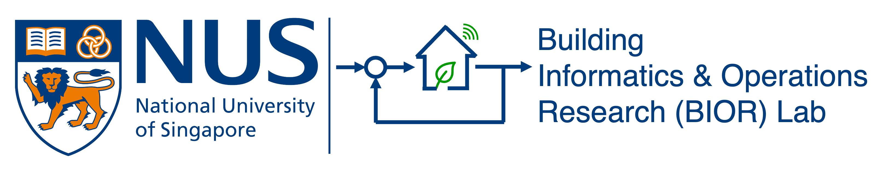
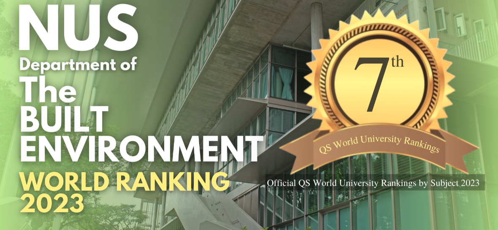

About BIOR

Smart
Low-carbon
Energy-efficient
Demand-flexible
Climate-resilient
Equitable
Building, District, and Urban Energy Systems.
Building Informatics and Operations Research (BIOR) Lab is directed by Dr. Maomao Hu, Assistant Professor of the Department of the Built Environment, College of Design and Engineering, National University of Singapore.
The overarching goal of our lab is to develop sustainable and scalable technologies and computational tools to make today’s building, district, and urban energy systems smart, low-carbon, energy-efficient, energy-flexible, climate-resilient, and equitable. We employ a multifaceted approach that encompasses data analytics and machine learning, physics-based modeling and simulation, optimization and model-based optimal controls, as well as experiments. These approaches have been deployed across a spectrum of scales, spanning from equipment- through building- and community- to city-scale.
Current and Past Openings
Current Openings
One research assistant position in Energy Management and Information System (EMIS). Check here for more details.
We are seeking exceptional Ph.D. students to join our team, with PGF opportunities available year-round. Successful candidates will demonstrate outstanding academic records and competing offers from top universities. More information on PGF can be found here.
Past Openings
Two postdoctoral research fellow positions in optimization, control, and learning of Multi-Scale Energy Systems. Check here for more details.
We are looking for one fully funded Ph.D. student to join our team starting from Jan 2025 or later. Candidates need to submit their complete application by July 1, 2024 for the admission in Jan 2025.
We are currently looking for 2-3 fully-funded Ph.D. students to join our team starting from Fall 2024 or later. 12-month stipend plus a tuition fee subsidy are covered for this position for 4 years. Candidates need to submit their complete application by Jan. 1, 2024 for the admission in Fall 2024. Please check NUS Research Scholarship for more information.
PhD Students
We warmly invite applications from students with backgrounds in Building Environment and Energy Engineering, such as Architectural Engineering and HVAC&R Engineering, Electrical and Computer Engineering, such as microgrids and automation, Thermal Engineering, such as heat and mass transfer and thermodynamics, Mechanical Engineering, such as fluid mechanics, or Applied Mathematics.
Requirements
General requirements for Ph.D. admission at NUS
- A good GPA in a relevant bachelor's or master's degree.
- Candidates who graduated from universities where English is not the language of instruction are required to submit at least one score of TOEFL, 85 for Internet Based Test, or IELTS Academic, 6.0.
English is the default lingua franca in Singapore, as well as at NUS and in our BIOR lab. Please check here for more information on general requirements for Ph.D. admission, including the validity period for GRE, TOEFL, and IELTS.
Specific requirements for Ph.D. admission in our BIOR lab
- Strong foundation in heat and mass transfer, thermodynamics, applied mathematics, optimization and control, data science and machine learning, as well as an interest in applying these knowledge to building environment and energy systems.
- Programming experience, such as Matlab, Python, C/C++, and R.
- Experience in related engineering software, such as EnergyPlus, TRNSYS, OpenStudio, FLUENT, and LabVIEW, depending on the applied research projects.
- Excellent spoken and written English language skills.
- Critical thinking, problem-solving, and communication skills, and more importantly, the collaborative spirit for working with an interdisciplinary team.
PhD Scholarships
An admission to the PhD programme does not guarantee a scholarship. Some admissions are on a self-funded basis. Please explore the potential scholarship opportunities available at NUS, including:
- NUS Research Scholarship
- President’s Graduate Fellowship (PGF), for outstanding students with exemplary academic records and competing offers with scholarships from other top universities.
- NUS ASEAN Research Scholarship, for outstanding graduate students from ASEAN countries.
- NUS Singapore/PR Graduate Fellowship (SGF).
- Singapore International Graduate Award (SINGA), open to all international graduates.
- A*STAR Graduate Scholarship, etc.
Timeline
There are two intakes, August and January, each year. The application deadlines are normally 1 January for the intake in August, and 1 July for the intake in January next year.
How to Apply
Prospective Ph.D. students should send an email with the subject line as
Prospective_PhD_{First Name}_{Last Name}
to the email address
maomaohu@nus.edu.sg
for inquiries. The email should be written in English and include the following:
- CV/Resume in English with an emphasis on your computational and research skills.
- Transcripts from undergraduate or graduate studies.
- GitHub repository, if any.
- Contact information for 2-3 references.
- Other materials demonstrating research and work capabilities, such as published papers as the first author, papers in preparation, and project reports.
Due to the high volume of inquiries, I may not be able to respond to everyone. However, please rest assured that I will carefully review each email and respond promptly if your qualifications align with current opportunities.
Research Assistants and Postdocs
The availability of Research Assistant (RA) and postdoctoral positions varies depending on the funding conditions. If you are interested in our research focus, you are encouraged to contact Dr. Hu to explore potential opportunities.
To apply, please include your CV, a brief summary of your research experience and interests, and the contact information for at least two references, with a subject line as
RA/Postdoc_Application_{First Name}_{Last Name}.
Visiting Students/Scholars
We welcome visiting students/scholars who are interested in collaborating with us. Ideally, students/scholars will be able to visit for a minimum of six months, preferably one year, to maximize the opportunity for collaboration and research. We can accommodate in-person and virtual visits, but the funding is not guaranteed and self-funded visiting is preferred.
If you are interested in exploring the possibility of working with us, please email Dr. Hu with a subject line as
Visiting_Application_{First Name}_{Last Name}.
Please include the following documents in your email: CV, a brief research proposal, 1-2 pages, aligned with our group, desired period of stay, and funding source. Please check
here
and
here
for more information on the visiting program as non-graduating research students at NUS.
About NUS and Our Department
The National University of Singapore (NUS) is Singapore's flagship university, which offers a global approach to education, research and entrepreneurship. NUS holds an outstanding reputation in the fields of engineering, science, business, and law. Globally, NUS was #8 in the QS World University Rankings 2026, #17 in the Times Higher Education (THE) World University Rankings 2025, and #20 in the US News 2025-2026 Best Global Universities Rankings.
For subject rankings, NUS's engineering programs are ranked #9 in the world in the THE World University Rankings by Subject 2025. NUS's program of Built Environment is ranked #5 in the QS World University Rankings by Subject 2024.
